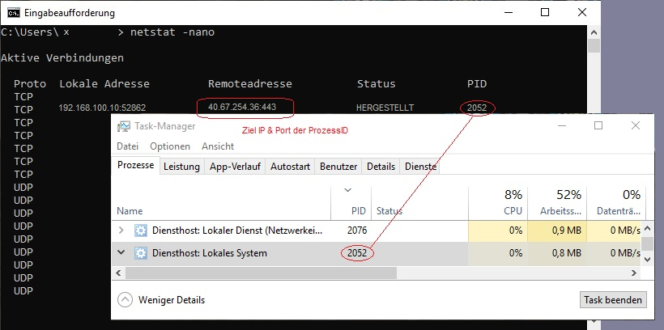

Protokolle und Ports
Wenn man von TCP/IP spricht, meint man manchmal die komplette Internetprotokollfamilie, hierzu zählen ca. 500 Protokolle. Das TCP/IP-Modell verwendet den gleichen Aufbau wie im OSI-Modell und besteht aus 4 Schichten: Netzzugangsschicht, Internetschicht, Transportschicht und Anwendungsschicht.
Was machen Ports? Im Kontext erklärt: Um einen Brief an Jemanden zu schicken, der in einem Hochhaus wohnt und an seinem Briefkast, aus Schutzgründen, keinen Namen hat, braucht man Straße, Hausnummer, Postleitzahl und die Apartment-Nummer.
Im Netzwerk besteht die Adresse aus 32 Bits. Also 32 Nullen und Einsen, bestehend aus 4 Oktette, die jeweils in Dezimal umgewandelt und mit Punkten getrennt, eine IP-Adresse bilden.
11000000 10101000 10110010 00100101 ... 192.168.178.37
Die IP-Adresse bekommt jetzt noch eine Port-Nummer, die wie im o.g. Beispiel die Tür des Empfängers ist. IPv6, das neuere Internet Protokoll benutzt Hexadezimale Adressen, das heißt mit Zeichen von 0 bis 9 und A bis F auf Basis 16. Eine IPv6-Adresse besteht aus 128 Bits.
Ports sind Teil der Transportschicht (Layer 4) im OSI-Modell. Mit der Sitzungsschicht (Layer 5) wird die Kommunikation gesteuert, über s.g. Sessions und Sockets.
Ports können verschiedene Zustände haben: offen, geschlossen und gefiltert bzw. geblockt. Man unterscheidet 2 Arten von Ports: Eingehende Ports (INBOUND) und Ausgehende Ports (OUTBOUND). Bei Eingehende Ports wartet der Computer oder Server auf eine Verbindungsanfrage. Ausgehende Ports identifizieren sich mit ihrer Nummer bei den Server-Diensten.
Der Internet-Browser schickt Anfragen über HTTP, das Hypertext-Transfer Protocol oder vorzüglich über das verschlüsselte HTTPS (= HTTP Secure). Computer stellen Portanfragen um daraufhin Verbindungen vom Server entgegenzunehmen. Es gibt Standard-Ports, für bestimmte Programme fest-zugeordnete Portnummern. HTTP läuft auf Port 80 über TCP. HTTPS benutzt Port 443.
Wenn man im Windows Taskmanager (oder in Linux mit den Befehlen: top; ps; tree).
die "PID" (Prozess ID) eines laufenden Programms findet kann man diesen verwenden
um über den (CMD-)Terminal-Befehl netstat -nano, vorhanden in Windows und Linux,
die Ports und deren Adressierung, sprich deren IPs, ausfinding machen.

Ports sind wie Daten-Tunnel. Sie benutzen s.g. Stream- und Datagram Sockets. Entweder TCP oder UDP. Ein Programm kann über mehrere Ports laufen und beide Protokolle verwenden. Über TCP verlaufen Daten "zuverlässig" im bidirektionalem Datenaustausch, ein Verlust von Datenpacketen wird verhindert. Der Schwerpunkt dieses Protokolls ist die verbindungsorientierte Paketvermittlung, wärend bei UDP nicht wichtig ist dass ALLES ankommt, sondern KONSTANT übertragen wird, mit geduldeden Unterbrechungen, beispielsweise beim Stream gucken oder bei Sprachübertragungen. Daher ist der Durchlass hier größer, dafür aber unzuverlässiger als über TCP.
Mit dem Linux Shell Befehl ss -lntp kann man Sockets untersuchen.
Dateien die von Protokolle benutzt werden findet man mit lsof -i nmap -sT -p- localhost abscannen.
Portscans im Internet sind strafbar! Um einen Port zu schließen benutzt man
iptables -A INPUT -p tcp --dport , als eine Zeile.
REJECT simuliert unreachable-Pakete und verschleiert die Firewall-Funktion, normalerweise geht auch DROP.
In Windows 10 gibt es für die PowerShell den Befehl Get-NetTcpConnection um aktive und lauschende Ports anzuzeigen.
Unter Linux (Debian) findet man im APT Advanced Package Tool ein Programm namens tcpdump apt install tcpdump
dass alle TCP-Packete in Echtzeit monitarisieren kann. tcpdump -i eth0 -n net 192.168.0.1. Man kann auch Logfiles durchlaufen lassen, tail -f /var/log/proxy/access.log.